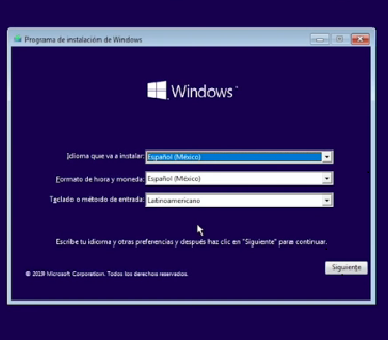

INFO UNAD
. 2. Se debe crear un articulo publicitario de la UNAD invitando a matricularse en la institucion con imagenes alusivas que deben ser editadas.
La Universidad Nacional Abierta y a Distancia, (UNAD) es un Proyecto Educativo que nacio con el nombre de Unidad Universitaria del Sur de Bogota, UNISUR durante el gobierno de Belisario Betancur.
Surgio, mediante la Ley 52 de 1981, como un establecimiento publico del orden nacional adscrito al Ministerio de Educacion Nacional y transformada por el Congreso de la Republica mediante la Ley 396 del 5 de agosto de 1997 en la Universidad Nacional Abierta y a Distancia UNAD.
Se creo con el objeto de disenar e implementar programas academicos con la estrategia pedagogica de la educacion a distancia, que fuesen pertinentes con las necesidades locales, regionales, nacionales e internacionales y acordes con los retos y las demandas de una sociedad democratica, participativa y dinamica afines con modelos cientificos, sociales y culturales que contextualizan al siglo XXI.
Desde su puesta en marcha abril de 1982 , la Universidad se ha caracterizado por su compromiso con las comunidades y poblaciones que no han tenido acceso a una capacitacion tecnica, socio humanistica y comunitaria. Tambien, por su contribucion a la recuperacion de los tejidos sociales, la generacion de espacios laborales y la formacion para la participacion ciudadana.


la siguiente informacion, le permitira instalar windows 10 en su computador, mediante un proceso, es necesario el cd de instalacion o una copia, tambien se puede instalar desde usb copiando una imagen del cd en la usb mediante programas como lili usb creator, la cual genera una usb booteable, permitiendole arrancar e instalar. El proceso se realiza mediante los siguientes pasos:
1. Ubicar dvd de instalacion de windows en unidad de lectura. reiniciar equipo, y con opciones de arranque inicie desde el dvd, seleccionar el idioma, y pulsar siguiente, luego en la siguiente pantalla seleccione instalar ahora.

2. En la siguiente pantalla pulse en, no tengo una clave , despues en la siguiente pantalla, elija la version a instalar y pulsar siguiente.

3. en la siguiente pantalla aceptar las condiones y pulsar siguiente. en la proxima pantalla elija personalizada. el equipo sigue la instalacion.

4. la siguiente pantalla elija la particion donde se instalara Windows y pulsar siguiente, el equipo sigue el proceso

5. Seleccionsr la region y la distribucion del teclado.
6. seleccione entre configuracion personal y en la siguiente pantalla asigne nombre al usuario.


7. Seleccione instalacion personalisada y siguiente. asi continua la instalacion
8. termina asi la instalacion luego seleccione configuracion, agrege la serie del windows para activacion.
Familia Unadista, ¡adelante! por Colombia luchad con amor, lleguemos con ciencia a la gente, transformémosla en un mundo mejor.
5. Genere un video tutorial de cómo se puede realizar un proceso de matrícula en la UNAD para estudiantes nuevos o si lo prefiere la explicación de la oferta académica de los diferentes programas que maneja la Universidad.